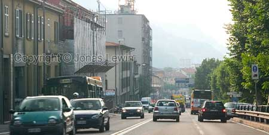
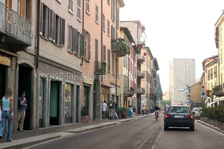
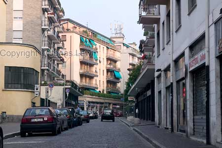
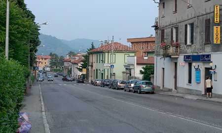

Italy, Como, 2004.
|
The
small town of Como is located just south of Switzerland's most southerly
border. Not the best city I've been in, but they do have some nice Pizzas here. Trying to get a pizza before 8 in the night was impossible. But it was worth the wait. Down town Como. What can I say, just a boring center. Nothing really worth seeing here. The local small Pizzeria. It was still closed when I left Como. Needless to say, I had my pizza in another restaurant. |